Production doesn't let you sleep, a quarter of the fight for a better tomorrow
Context
Adventory has problems!
Ring! Ring!
Ring! Ring!
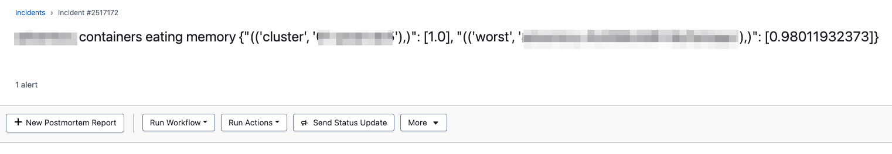Kowalski analysis!

Memory App
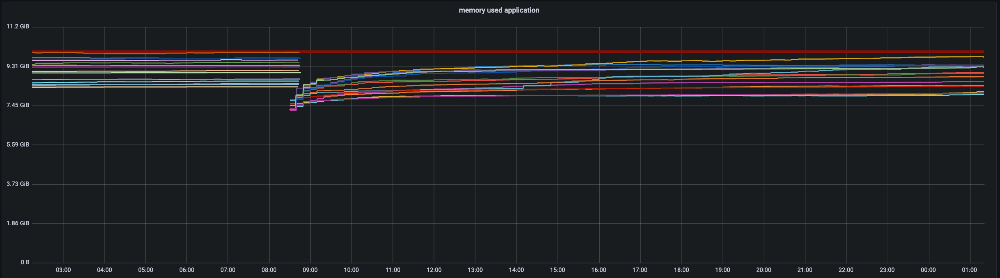JVM Heap
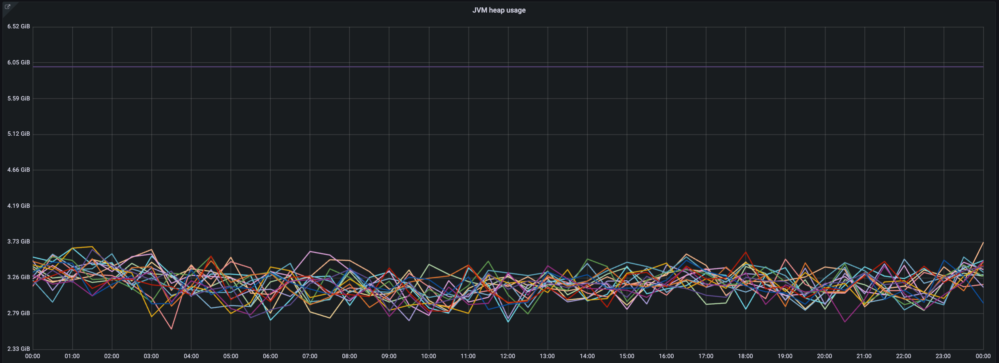Off-heap is a problem
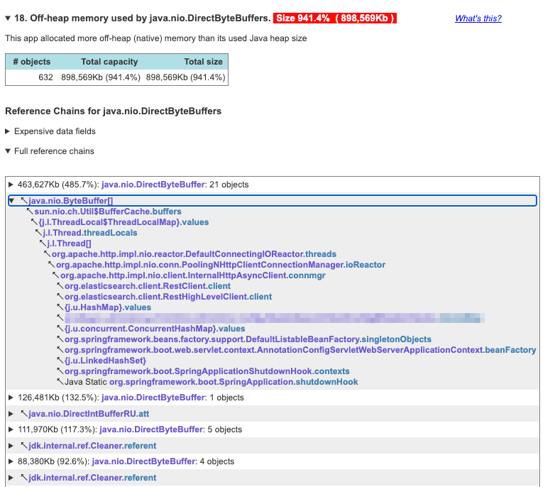
What is DirectByteBuffer?
DirectByteBuffer
The contents of direct buffers may reside outside of the normal garbage-collected heap, and so their impact upon the memory footprint of an application might not be obvious. It is therefore recommended that direct buffers be allocated primarily for large, long-lived buffers that are subject to the underlying system's native I/O operations.
~https://docs.oracle.com/en/java/javase/21/docs/api/java.base/java/nio/ByteBuffer.html
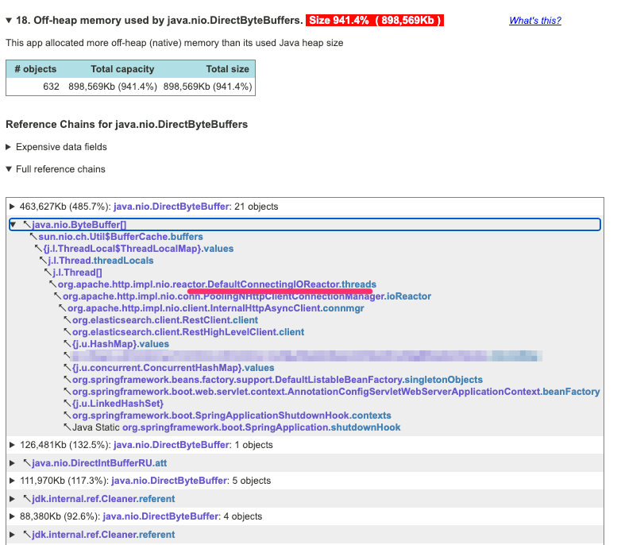
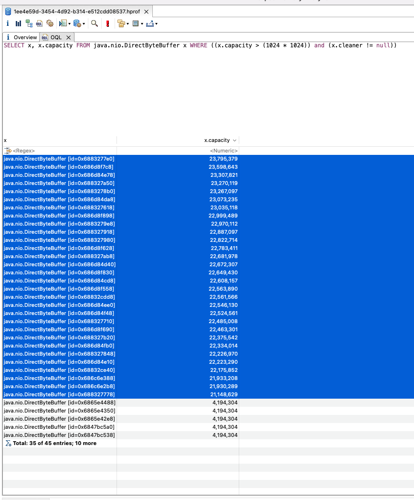

Result
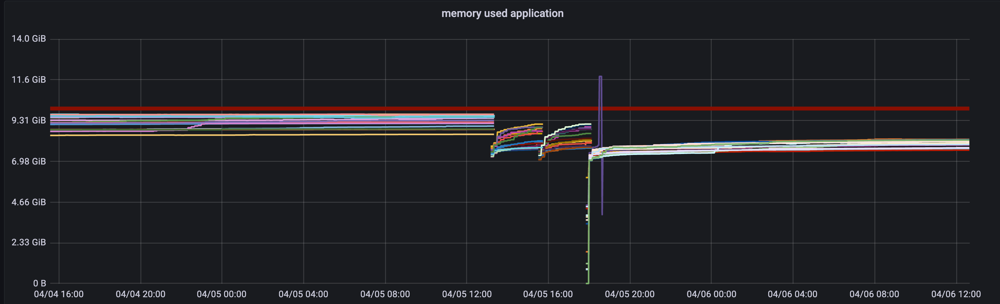Aggregator has problems!
Ring! Ring!
Ring! Ring! Ring! Ring! Ring! ...
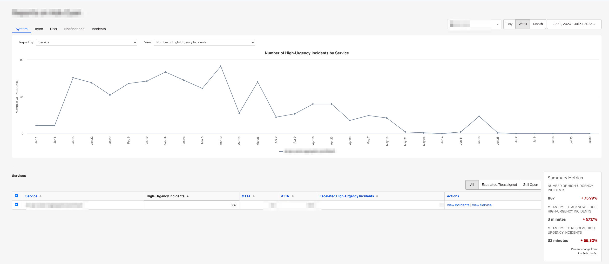Kowalski analysis!
Lots of app restarts
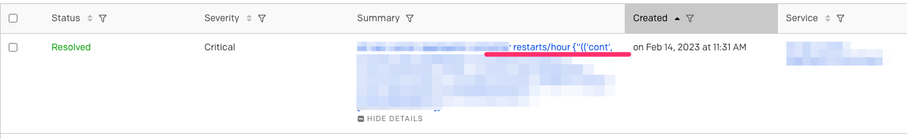Firstly. Where are the metrics?
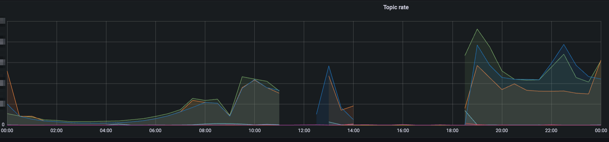
The database is busy and we are doing 'metrics'
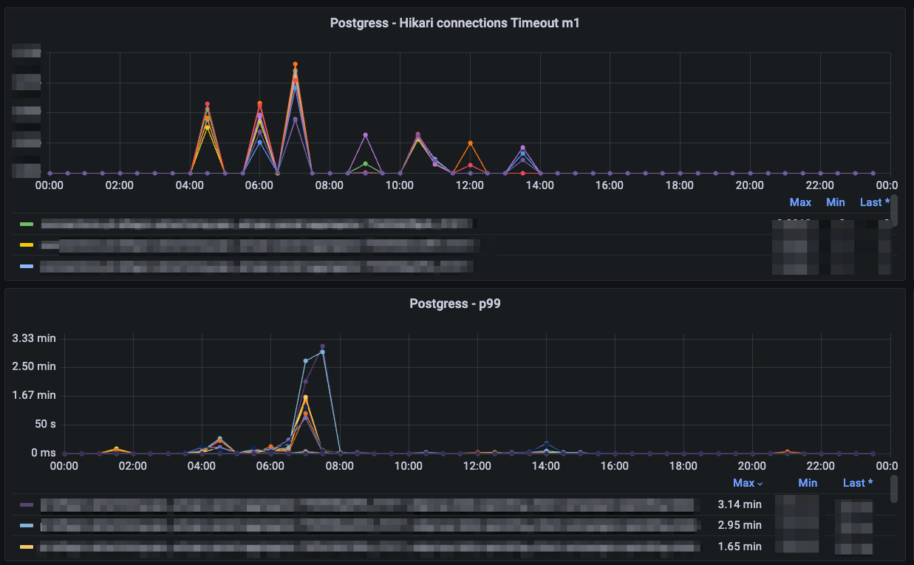
Solution
Deleting these metrics unblocked the metrics publishing thread.
Solution
Deleting these metrics unblocked the metrics publishing thread.
Metrics came back!
The service did not respond to health checks
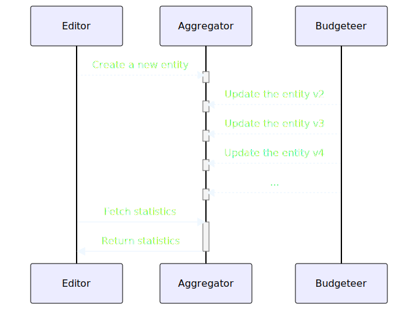
Response time
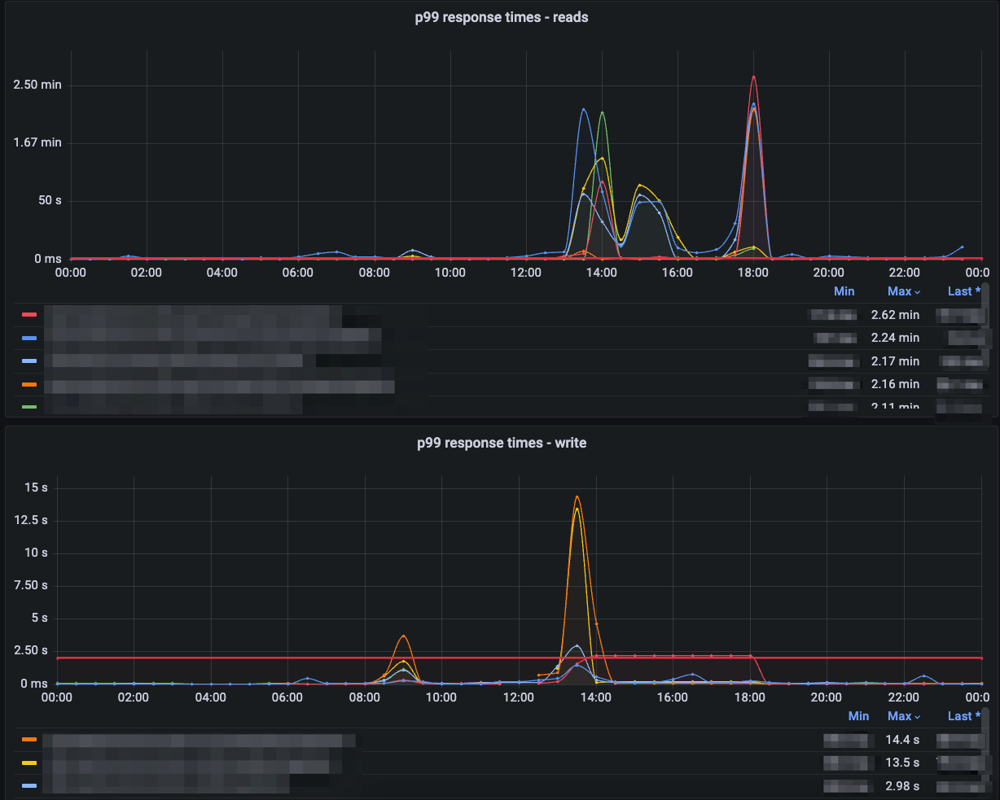
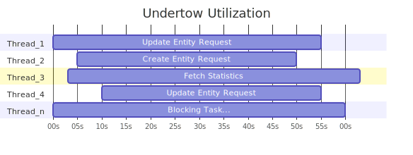
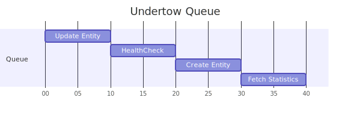
Bulkhead Pattern
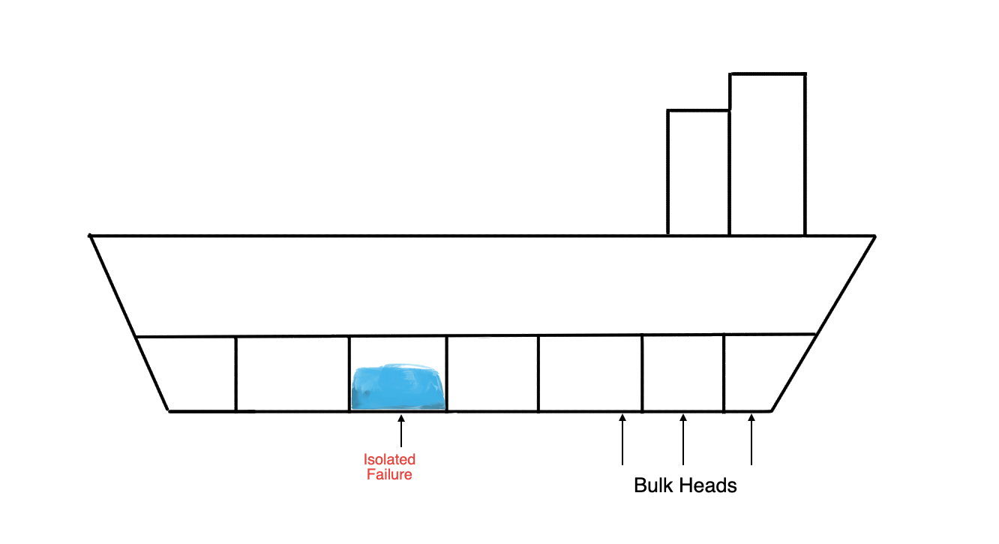
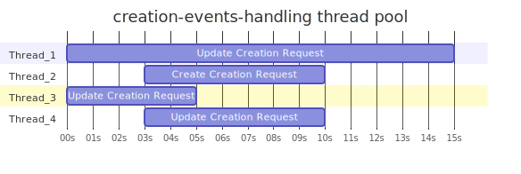
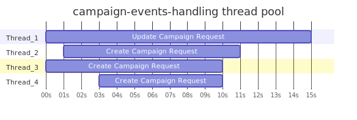
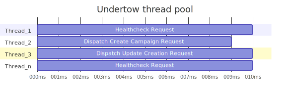
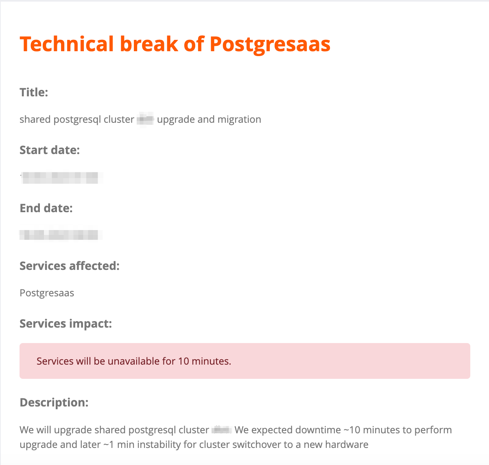
References